15 Times World War 3 Nearly Started
Posted on 10.09.12 by Vasil Kolev
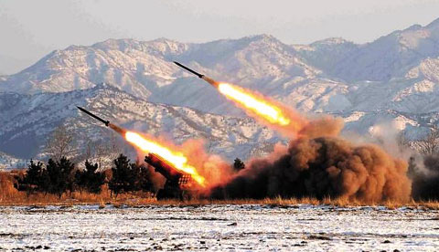
From wars in the Middle East to faulty computer chips simulating a real nuclear attack, we count 15 times the world almost came to an end in our age of nuclear weapons.
Number 15 - 1979 NORAD computer glitch
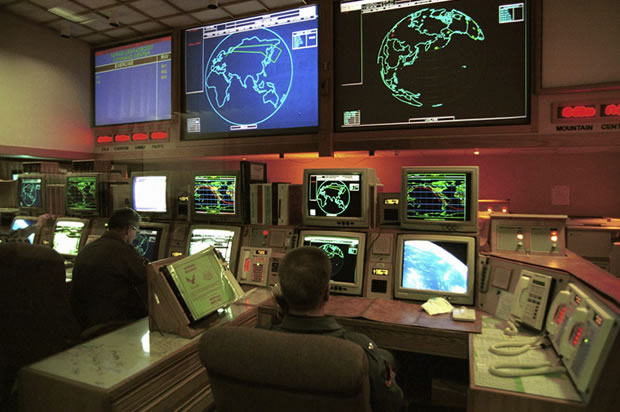
- This occurred on the morning of November 9th, 1979 at Colorado's North American Aerospace Defence Command
- Technicians received reports that the Soviets had launched a series of missiles at North America, with the response being to launch 10 interceptor fighter planes, get the president on an escape plane and prepare to launch a retaliatory strike
- Then we find out a technician had accidentally started a training program to simulate a Soviet attack, a computer glitch that almost destroyed everyone on Earth
Number 14 - Attack on Yeonpyeong

- This took place not too long ago, November 2010, an attack by North Korea against South Korean troops stationed at the island of Yeonpyeong
- They launched a total of 160 missiles against them, decimating a huge number of people - and even worse, inciting the possibility this border conflict might escalate in World War 3
- Though we've so far avoided it, this event is still a tragic, meaningless waste of human life
Number 13 - B-52 Crash near Thule
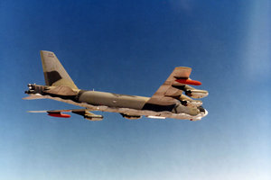
- January 21st, 1968, a fire breaks out on a B-52 bomber - the pilot has not time to contact base before he bales out
- The plane crashes in some ice 7 miles offshore of Thule, then its fuel and certain compounds of nuclear weapons explode, but does NOT trigger a nuclear detonation
- If it had, alerts would have shown an attack on both the nearby base and the bomber itself - indicating to the White House an enemy attack and need for immediate retaliation, but luckily none of this came to pass
Number 12 - 1995 Research Rocket

- Norway, January of 1995, local scientists launch a research rocket to study the aurora borealis
- Meanwhile, in Russia, eyes boggle as what looks like a gigantic nuclear warhead torpedoes towards them - so President Boris Yeltsin whips out his briefcase full of nuclear codes purely to launch nukes at every target they can reach
- Thankfully, the missile fell into the ocean, Yeltsin put away his briefcase and instead picked up a delicious sandwich
Number 11 - Soviet Early Warning False Alarm
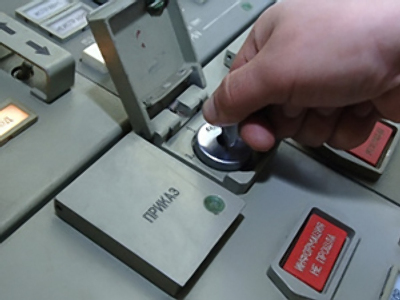
- September 26th, 1983, a secret bunker owned by the Soviets - commander Stanislav Petrov has just settled into a chair when a loud siren went off and screens showed that Americans had launched 5 missiles
- They only had minutes to respond, there was chaos and stress in the bunker, because of the enormous incoming payload, the chain of command went straight to Petrov and he had to decide if he wanted to respond with missiles, or call in a false alarm
- He decided to do the latter, but not because they realised they were fakes, no, because he knew his equipment was new and he wasn't prepared to begin World War 3 based on computer data alone - but he said he really did believe missiles were on their way, which made it damn near impossible to call them fakes, but he did and we're all thankful for his call in judgement
Number 10 - Able Archer 83
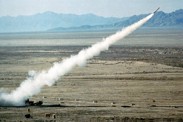
- This is another training program like the NORAD computer glitch, but much more elaborate and very nearly took us to war by accident
- It was an exercise called Able Archer 83, in which an attack on Europe would be met with a U.S military strike on the Soviets
- The U.S airlifted 19,000 troops to Europe and changed alert status to DEFCON 1, and meanwhile, though the Soviets knew it was just a war game, they too went into high alert and prepared their nukes - both poised to attack at the drop of a feather, but luckily the games ended not long after and things calmed down
Number 9 - 9/11
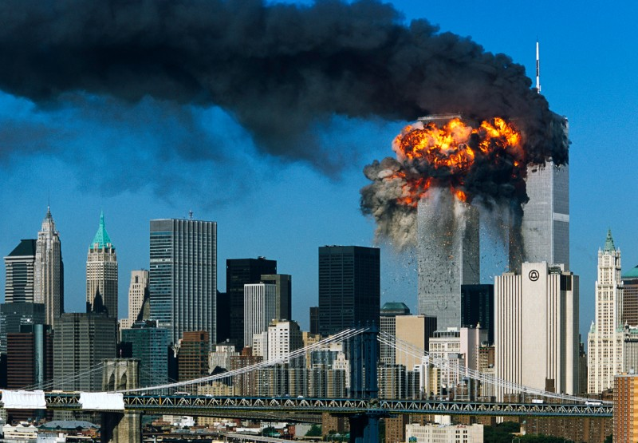
- One of the most tragic events in modern history, the Twin Towers - those iconic structures from New York City were hit by two airplanes on September 11th, 2001
- Likewise, another plane crashed into the Pentagon and one more near the White House on the same day, perpetrated by Osama Bin Laden and the terrorist group Al Queda
- Over 3,000 people died that day, and it began the war on terror which could have quickly escalated into a bomb-filled conflict
- Nuclear terrorism is the next step up, but thankfully countries around the world are taking measures to prevent this
Number 8 - Middle-East False Alarm
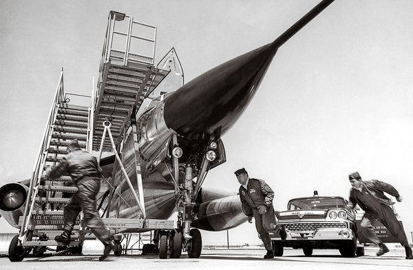
- 1973, the U.S sponsored a cease fire to end the Arab-Isreali war, but further fighting began between Egyptian and Israeli troops in the Sinai desert
- Since Nixon was involved in the Watergate scandal, several U.S officials took it upon themselves to enter DEFCON 3 to warn the U.S.S.R not to intervene with the events in Sinai
- This was all fine, except a Klaxon accidentally went off at Kinchole Air Force Base in Michigan, which you DON'T want during DEFCON 3 - this set off the entire base and almost had B-52 bombers take off, but luckily the alarm was fixed and nothing happened
Number 7 - War in Afghanistan
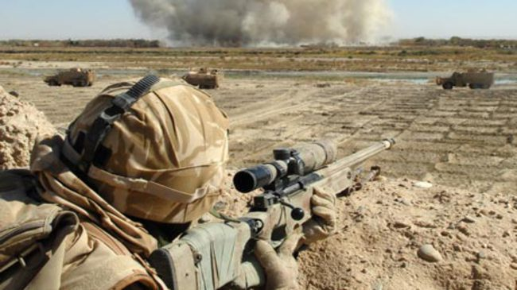
- Here we find a 9 year conflict - an attack by two world powers against each other without using nukes, instead, by having the U.S and UK finance and arm Afghan-Mujahideens to fight the local Soviets - a proxy war, you might say, hiding behind foreign troops to further your own agendas
- It was such a sickening move that Jimmy Carter was quoted as saying that it was the most significant threat to world peace since WW2, two enemies involving an overseas body shield between their own personal conflicts with the result - escalation and destruction
Number 6 - Faulty Computer Chip
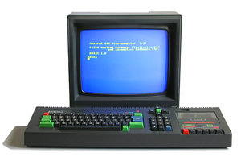
- June 3rd, 1980, a simple number algorithm showing whether nukes were on their way and how many, where it should have read 0000, it read 2222 - and though the number was insanely high, it was still possible and nuclear bomber crews started their engine waiting for the go-ahead
- It was discovered to be a false alarm and things were fine, but once again 3 days later the same thing happened, 2222 bombs on their way, the nuclear bomber crews still had their engines revved from earlier in the week
- But the problem was basic - a computer chip displayed 0s as 2s, but even so, all it takes is one bad computer chip to wipe out the human race
Number 5 - Cuban Missile Crisis
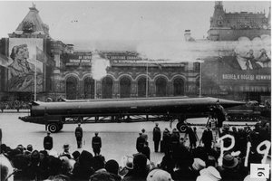
- The rest of the items in this list will relate to this crisis spanning 13 terrifying days in 1962
- Missile silos were stationed in Cuba and boats shipped even more nukes, but U.S President Kennedy formed a blockade to stop more boats from arriving
- The Soviets took this as an act of aggression and I quote "one that propels human kind into the abyss of a world nuclear-missile war"
- 13 days passed in which U.S Navy boats were told to open fire on any encroaching ships
- Then Kennedy made a deal with Soviet Premier Khrushchev to dismantle their warheads in Turkey, as well as agree never to invade Cuba, and in exchange the Soviets would remove all their weapons from Cuba
- It is the closest human kind has ever come to engaging in all-out nuclear war
Number 4 - An Animal Nearly Starts World War 3
- During the same period in the missile crisis, alarms went up in a Duluth American air base indicating an intruder and possibly Soviet bombers overhead
- Pilots scrambled around, already tense from the most chaotic time in history - but it was a false alarm, one that nearly destroyed us all - and it was caused by a bear
- That’s right, a damn bear somehow snuck into the base and set off alarms, almost killing every man, woman and child on this planet
Number 3 - Moorestown False Alarm
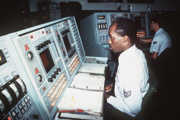
- October 28th, a town in New Jersey reported that a nuclear attack was underway - when in reality it was a test tape simulating a Cuban missile attack, but coincidentally a satellite happened to pass over the area at that exact moment which, when combined with the stress from those 13 days, leads to a recipe for assumptions
- The entirety of NORAD was informed and put on alert, but before a counter-attack could take place, the expected time on the Moorestown explosion did NOT take place
- The radar system responsible for confirming an incoming missile was not in operation that day because personnel had been reassigned for the Crisis
Number 2 -

- One day before the Cuban Missile Crisis ended, an American spy plane got lost because the aurora borealis obscured his vision of the stars used for navigation
- He drifted off course and ended up in the airspace of the Soviet Union
- This simple miscalculation caused a dramatic response from both sides - the Soviets scrambled fighter jets to intercept and destroy the plane, while the Americans sent nuclear-armed fighters in response to escort the plane back to American soil, which they did just barely before the Soviet jets arrived
- Had either side engaged in aerial warfare - it would've been a disaster
Number 1 - B-59 Submarine
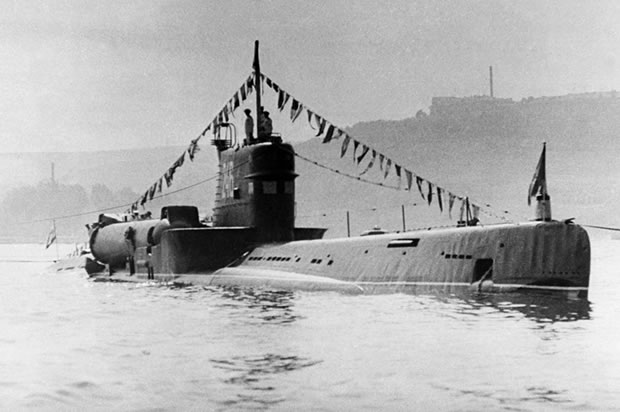
- That same day begins my favourite story from the era, one that shows how one man can save or destroy the entire planet
- This Soviet B-59 submarine was holding underwater near the U.S blockade line near Cuba when an American ship began dropping warning shots to force them to resurface
- The submarine officers took this as real, legitimate fire to mark the beginning of World War 3, and the captain ordered a nuclear missile for launch
- Had he alone been given authority to launch, a nuclear war would've begun, but luckily he needed two senior officers to give their okay and one of them didn't, Vasili Arkhipov, who convinced them to resurface and request new orders from Moscow
- This man, Vasili Arkhipov, saved the world and it would be another 40 years before people found out about it